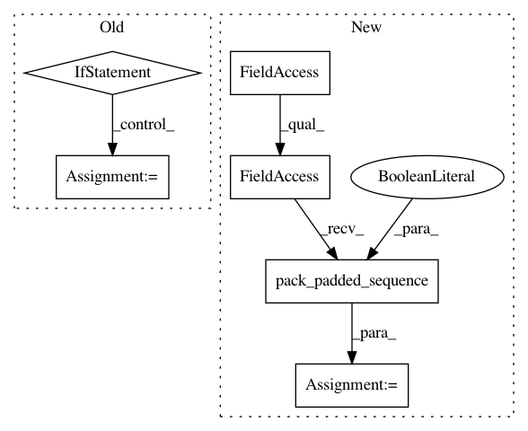

9eae70be43bee8dde7fd4c75c2534331a10de6a1,infcomp/modules.py,Artifact,loss,#Artifact#Any#Any#,448
Before Change
for t in range(o.size(0)):
obs[b, t] = o[t]
obs_var = Variable(obs, requires_grad=False)
if data_parallel and self.on_cuda:
obs_emb = torch.nn.DataParallel(self.observe_layer)(obs_var)
else:
obs_emb = self.observe_layer(obs_var)
for b in range(batch.length):
seq_len = batch_sorted_by_observes[b].observes.size(0)
batch_sorted_by_observes[b].observes_embedding = obs_emb[b, seq_len - 1]
else:
After Change
for t in range(o.size(0)):
obs[b, t] = o[t]
obs_var = Variable(obs, requires_grad=False)
obs_var = torch.nn.utils.rnn.pack_padded_sequence(obs_var, observes_lengths, batch_first=True)
obs_emb = self.observe_layer.forward_packed(obs_var, batch.length)
obs_emb, _ = torch.nn.utils.rnn.pad_packed_sequence(obs_emb, batch_first=True)
for b in range(batch.length):
seq_len = batch_sorted_by_observes[b].observes.size(0)
batch_sorted_by_observes[b].observes_embedding = obs_emb[b, seq_len - 1]
In pattern: SUPERPATTERN
Frequency: 3
Non-data size: 6
Instances
Project Name: pyprob/pyprob
Commit Name: 9eae70be43bee8dde7fd4c75c2534331a10de6a1
Time: 2017-05-06
Author: atilimgunes.baydin@gmail.com
File Name: infcomp/modules.py
Class Name: Artifact
Method Name: loss
Project Name: asappresearch/sru
Commit Name: faf3aa876462323f2fa721ebd633752d6489808f
Time: 2020-09-18
Author: taolei@csail.mit.edu
File Name: sru/modules.py
Class Name: SRU
Method Name: forward
Project Name: Alexander-H-Liu/End-to-end-ASR-Pytorch
Commit Name: 57cf91dbd3d6cdaa1b239320ba693a5b7bfbf02e
Time: 2019-09-25
Author: alexliu36@gmail.com
File Name: src/lm.py
Class Name: RNNLM
Method Name: forward